Ultimate Starter Kit for Raspberry Pi Pico 2 WH
Development on Language C/C++
The Raspberry Pi Pico-SDK has both advantages and disadvantages in the development process, which are as follows:
Advantages
- Comprehensive and Well-Integrated The Pico-SDK is specifically designed for the Raspberry Pi Pico and its RP2040 microcontroller. It provides a comprehensive set of tools and libraries that are tightly integrated with the hardware, making it easier for developers to access and control various features of the Pico, such as GPIO pins, peripherals like SPI, I2C, UART, and DMA. This integration ensures efficient and reliable communication between the software and hardware components.
- Performance Optimization The SDK is optimized for the Pico's hardware architecture, allowing developers to fully leverage the capabilities of the RP2040's dual-core Cortex-M0+ processor. This can result in better performance and more efficient use of system resources, which is particularly important for applications that require real-time processing or high-speed data handling.
- Active Community and Support As part of the Raspberry Pi ecosystem, the Pico-SDK benefits from a large and active community of developers. This means that there are plenty of resources available, including tutorials, forums, and example projects, which can help developers quickly get started and troubleshoot any issues they encounter. Additionally, the community-driven nature ensures that the SDK is regularly updated and improved based on user feedback.
- Cross-Platform Compatibility The Pico-SDK can be used on various operating systems, including Windows, macOS, and Linux. This flexibility allows developers to work in their preferred environment and ensures that the SDK can be easily integrated into different development workflows.
Disadvantages
- Learning Curve For beginners or developers who are not familiar with embedded systems or C/C++ programming, the Pico-SDK may have a steep learning curve. Understanding the intricacies of the SDK, as well as the underlying hardware architecture of the Pico, requires a significant amount of time and effort. This can be a barrier to entry for those who are new to this type of development.
- Complexity in Setup and Configuration Setting up the development environment for the Pico-SDK can be complex. It involves installing multiple tools and dependencies, such as the GNU ARM toolchain, and configuring the build system. Any issues or errors during this process can be difficult to diagnose and resolve, especially for inexperienced developers.
- Limited Documentation While there are resources available from the community, the official documentation for the Pico-SDK may not always be as comprehensive or detailed as some developers would like. This can make it challenging to fully understand certain aspects of the SDK or to find specific information needed for a particular project. As a result, developers may need to spend additional time searching for answers or experimenting with different approaches.
- Resource Constraints The Raspberry Pi Pico has limited system resources, such as memory and storage. This can be a limitation when working with the Pico-SDK, as developers need to carefully manage resources to ensure that their applications run efficiently without running out of memory or storage space. This may require optimizing code and using techniques such as memory pooling or data compression to make the most of the available resources.
Getting Start with Pico-SDK
In this tutorial, we will use a Raspberry Pi as a Linux host. We will set up the Pico-SDK environment under the Linux environment of the Raspberry Pi and proceed with programming. We will build a simple circuit with each module of the kit one by one and write code to implement applications such as data acquisition and distribution.
Sure, here is a detailed guide on setting up the Pico-SDK environment for the Raspberry Pi Pico 2W on a Raspberry Pi without any VS Code content:
Prerequisites
- Hardware:
- Raspberry Pi (any model with sufficient resources to run a Linux OS).
- Raspberry Pi Pico 2W.
- USB cable for connecting the Pico 2W to the Raspberry Pi.
- Software:
- Raspberry Pi OS (or any other Linux distribution) installed on the Raspberry Pi.
- Basic familiarity with Linux commands and terminal operations.
Step-by-Step Guide
Step 1: Update Your Raspberry Pi
Open a terminal on your Raspberry Pi and run the following commands to update your system:
Step 2: Install Required Tools and Libraries
Install the necessary tools and libraries for compiling and flashing code to the Pico 2W:
wget
https://raw.githubusercontent.com/raspberrypi/pico-setup/refs/heads/master/pico_setup.sh
chmod +x pico_setup.sh
./pico_setup.sh


Step 3: Build a test project
Create a directory to store the project files:
Step 4: Create CMakeLists.txt and main.c
- CMakeLists
cmake_minimum_required(VERSION 3.25)
include($ENV{PICO_SDK_PATH}/external/pico_sdk_import.cmake)
pico_sdk_init()
project(blink C CXX)
set(CMAKE_C_STANDARD 11)
set(CMAKE_CXX_STANDARD 17)
add_executable(blink main.c)
target_link_libraries(blink pico_stdlib)
if (PICO_CYW43_SUPPORTED)
target_link_libraries(blink pico_cyw43_arch_none)
endif()
# create map/bin/hex file etc.
pico_add_extra_outputs(blink)
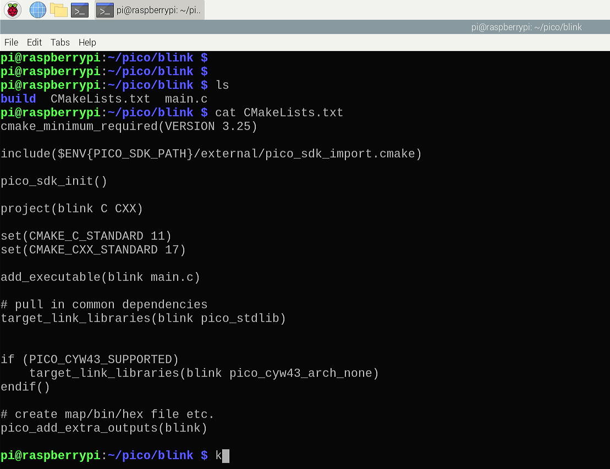
Step 5. Create main.c
#include "pico/stdlib.h"
#ifdef CYW43_WL_GPIO_LED_PIN
#include "pico/cyw43_arch.h"
#endif
#ifndef LED_DELAY_MS
#define LED_DELAY_MS 250
#endif
int pico_led_init(void){
#if defined(PICO_DEFAULT_LED_PIN)
gpio_init(PICO_DEFAULT_LED_PIN);
gpio_set_dir(PICO_DEFAULT_LED_PIN, GPIO_OUT);
return PICO_OK;
#elif defined(CYW43_WL_GPIO_LED_PIN)
return cyw43_arch_init();
#endif
// Turn the led on or off
void pico_set_led(bool led_on){
#if defined(PICO_DEFAULT_LED_PIN)
gpio_put(PICO_DEFAULT_LED_PIN, led_on);
#elif defined(CYW43_WL_GPIO_LED_PIN)
cyw43_arch_gpio_put(CYW43_WL_GPIO_LED_PIN, led_on);
#endif
}
int main() {
int rc = pico_led_init();
hard_assert(rc = PICO_OK);
while(true) {
pico_set_led(true);
sleep_ms(LED_DELAY_MS);
pico_set_led(false);
sleep_ms(LED_DELAY_MS);
}
}
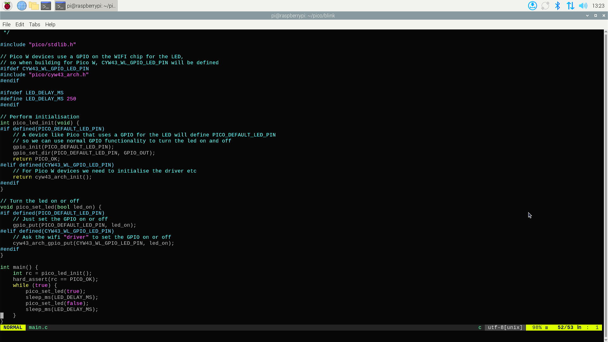
Configure the build system using CMake, specifying the Pico 2W board:
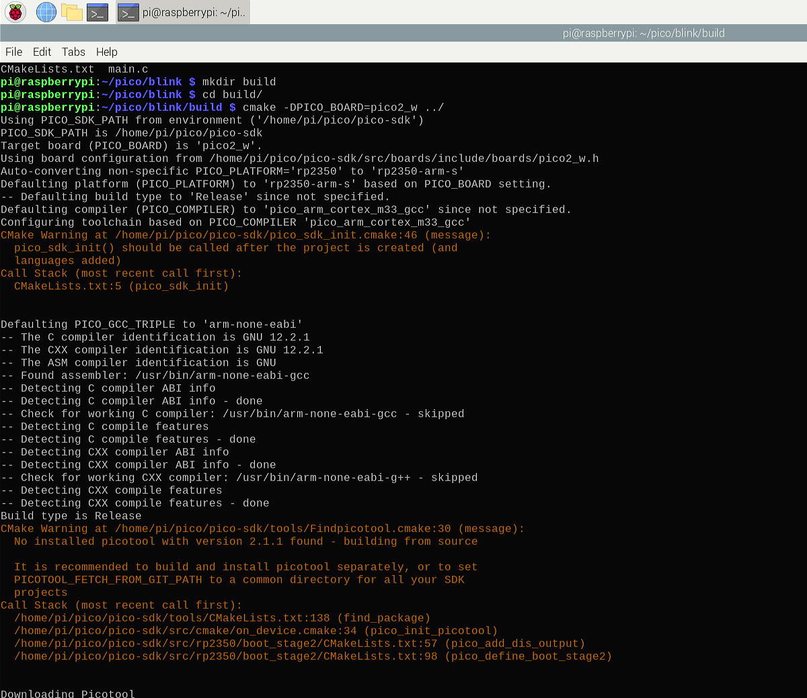
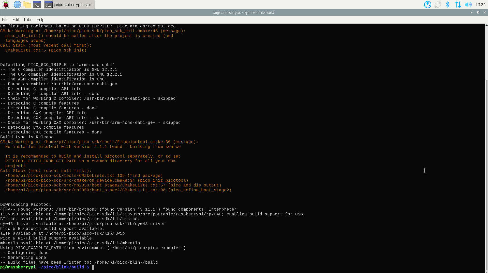
Build the project:
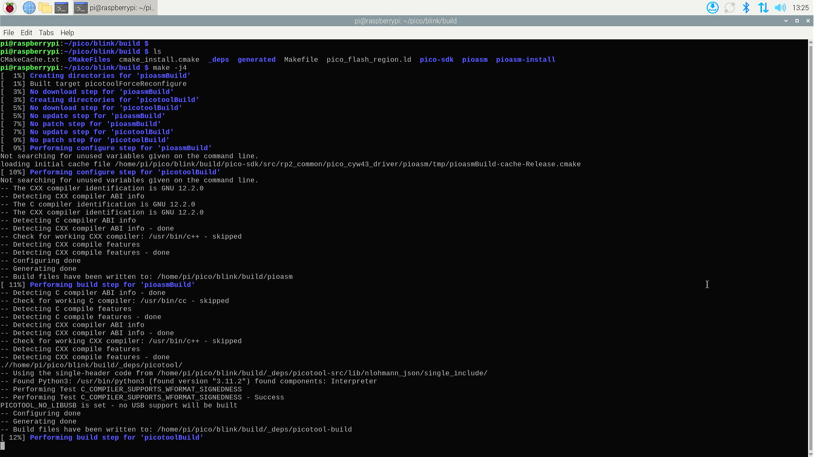
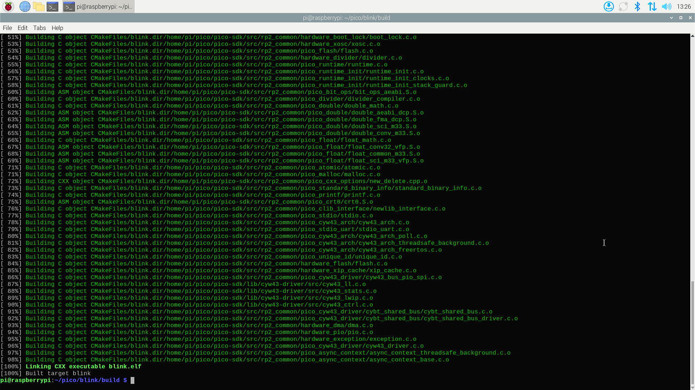
Step 6: Flash an project to the Pico 2W
To flash an project (e.g., the blink ) to the Pico 2W, follow these steps:
- Prepare the Pico 2W for Flashing:
- Hold the BOOTSEL button on the Pico 2W while connecting it to the Raspberry Pi via USB. The Pico 2W should appear as a USB mass storage device named
RPI-RP2. - Release the BOOTSEL button once the Pico 2W is recognized.
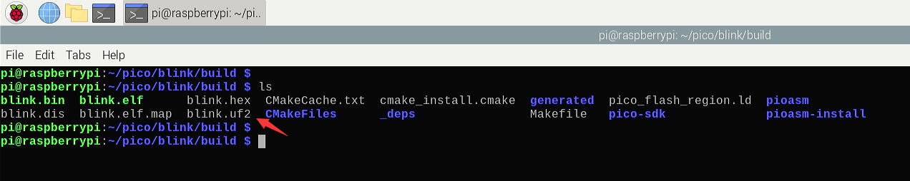
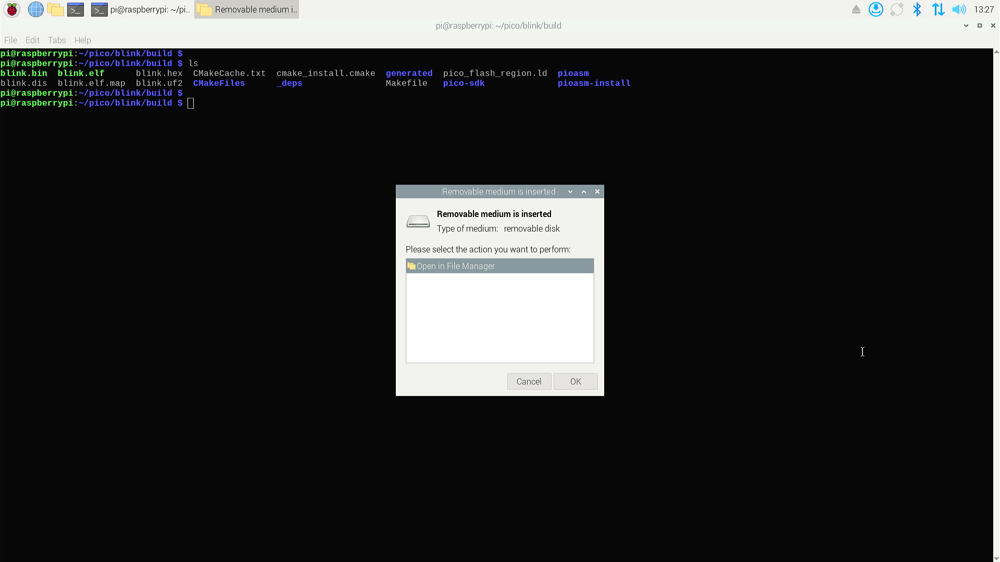
- Copy the UF2 File to the Pico 2W:
- Copy the generated
.uf2file to the Pico 2W storage device:
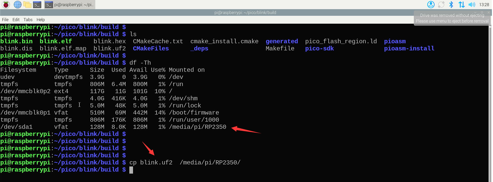
- The Pico 2W will automatically reboot and run the blink code.
Step 7: Create and Build Your Own Project
To create your own project, follow these steps:
- Create a New Project Directory:
-
Initialize the Project:
-
Create a
CMakeLists.txtfile to configure the build system. Here’s a basic example:cmake_minimum_required(VERSION 3.13.1) include($ENV{PICO_SDK_PATH}/external/pico_sdk_import.cmake) project(my_project C CXX) set(CMAKE_C_STANDARD 11) set(CMAKE_CXX_STANDARD 17) pico_sdk_init() add_executable(my_project main.c) pico_add_extra_outputs(my_project) # enable USB and Uart Output pico_enable_stdio_usb(my_project 1) pico_enable_stdio_uart(my_project 1)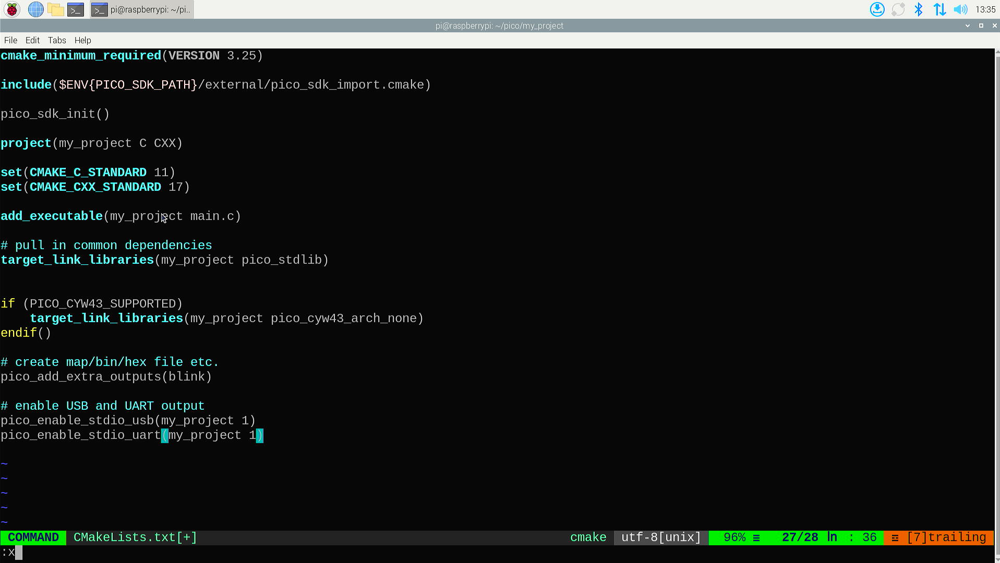
-
Create a
main.cfile with your code. For example:
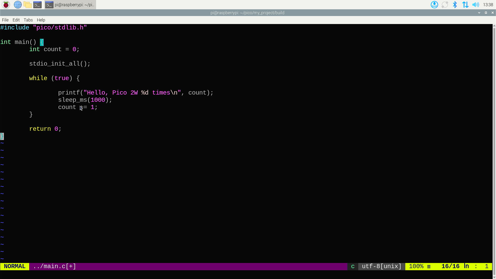
- Build the Project:
-
Create a build directory and configure the project:
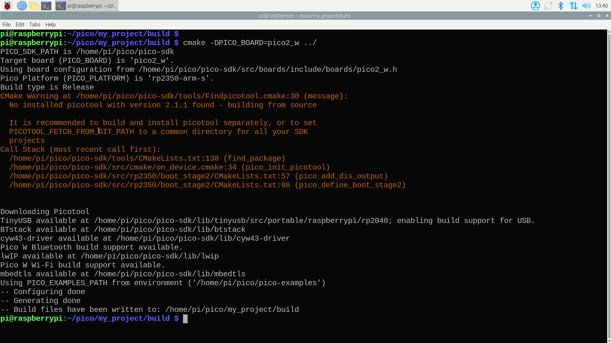
-
Flash the Project to the Pico 2W:
-
Follow the same steps as in Step 6 to flash the
.uf2file to the Pico 2W. -
Build Virtualenv environment and test the serial port:
- Create a virtualenv and install
pyseriallibrary:sudo apt update sudo apt -y install virtualenv virtualenv -p python3 venv cd venv/ source bin/activate pip install pyserial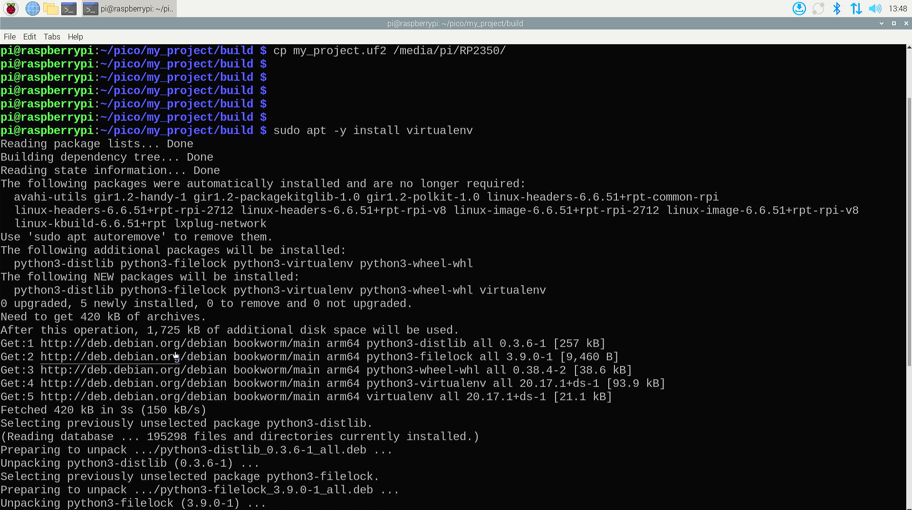
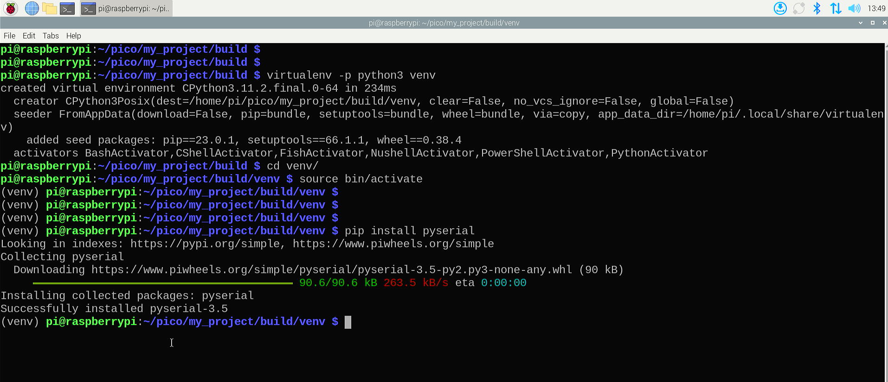
- ** Write a python script to test
UART: - Create a file named
monitor.py: - Copy and paste following code:
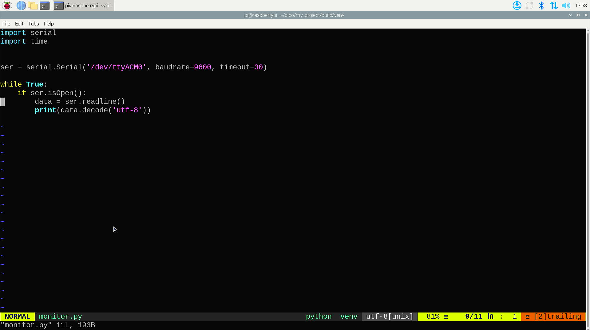
- Execute the python code and check if the output information is as the same as the pico's project code.
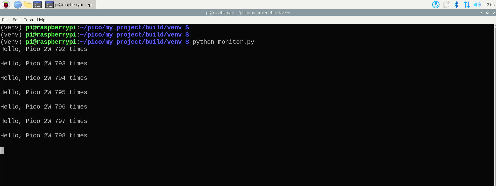